Artwork by Pixcasso 使用算法（人工智能）手动生成的 500 幅艺术品在 Adobe Photoshop 和互联网上的一些不同工具中编辑。用 Pixcasso 粘着他的手指。每个人的钱包里都应该有一件精美的艺术品。从我
Ascended Pigeons 我们的第一个系列 - Project Pigeon的衍生产品。 为我们在 Discord 中的支持者创建。项目：Pigeon 是我们对 Web3 世界的深入探索。我们正在通过受我们的“鸽子
ASM AIFA All-Stars 40,000 个足球角色，快速、有趣、完全 3D 操纵、全独特和全明星！ 人工智能足球协会 (AIFA) 是即将推出的去中心化赚钱足球游戏，由世界领先的不可替代智能协议 Altered State Machine
ASM AIFA Genesis Altered State Machine 的世界上第一个不可替代的智能首映。 10,000 个独特的创世纪盒子；每个盒子里有 1 个独特的人工智能 ASM 大脑🧠 和 4 个独特的 AIFA 全明星。 人工智能足球协会 (AIFA)
ASM Brains ASM 的工作原理 在许多游戏世界、金融应用程序和元界中创建 AI 代理、竞争并与之交互。创建新的代理，或使用 ASM 为您现有的 NFT 提供大脑。 对于开发者 添加 AI 代理
ASM Gen II Brains ASM Gen II Brains 🧠，第二代 Non-Fungible Intelligence™。通过基因组挖掘在 AIFA Moon 上注入原始矿物质。大脑能够学习和进化。它们可以跨不同的形式和世界进行互操
Asprey Bugatti La Voiture Noire Collection 第一个 Asprey Bugatti 系列：La Voiture Noire。在 Asprey 的伦敦工作室制作的 261 件雕塑与 NFT 艺术品相关联。每个 NFT 都有布加迪和 Asprey 的品牌颜色，反映了几个世纪的传统，并庆
Assplosion Assplosion 是 5,000 只爆炸鸟的集合。当您获得一只鸟时，您将获得一次 ASSplosion 尝试。这意味着您可以尝试将随机鸟的屁股炸飞。 但冷静下来，你只会有50%的成功率，这意味
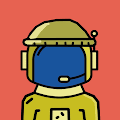 Astro Buddies 天文伙伴统计 创建于 8 个月前 14 代币供应 5% 费用 过去 7 天没有售出 Astro Buddies。 多边形区块链上有 1000 个独特的 Astro 伙伴。 Nicholas_i 拥有的所有超过 (0.001 eth) 的 astro 伙伴的
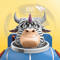 Astro Frens Astro Frens 是一个星际系列的通货紧缩 NFT 集合，结合在他们自己独特的元宇宙——Astroverse 中。 每只 Astro Bull 都是独一无二的，由超过 100,000 个按稀有度加权的可
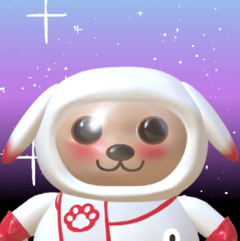 AstroDogs Astro Dogs 是代表参加世界杯的国家的独特 1/1 NFT 收藏品。 可以在 AR 中使用 Facebook 或 Instagram 查看每个国家/地区代表的 Astro Dogs。 除了住在 Pawerse 和成为 Astro Friends Club 的成员之外，Ast
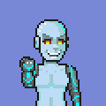 AstroFreaks AstroFreaks 项目是受 CryptoPunks 启发的像素生成 CryptoArt 集合。该系列由 1,000 个角色组成，每个角色都包含独特的特征组合，使它们成为有趣且有吸引力的收藏品。大多数特征都是以流行
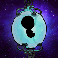 AstroHeads AstroHeads 是生活在以太坊区块链上的 8,851 个 AI 生成的收藏品的集合。AstroHeads 将尽职尽责地为他们幸运的主人服务，因为他们探索地球并从可爱的婴儿成长
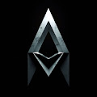 Astrominers Official 8888 名独特的 Astrominers 前往 Metaverse 的遥远星球，在那里他们开采稀有矿物以获得丰厚的回报 ▶ 什么是 Astrominers 官员？ Astrominers Official 是一个 NFT（不可替代代币）集合。存储在区块链上的数
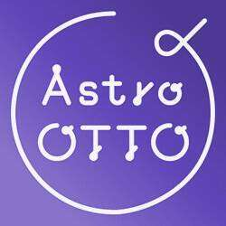 AstroOTTO2001GENESIS AstroOTTO 2001 是一个以“希望”为主题的 NFT 项目。2001 原创人物：太空先锋（AstroOTTO）并想创立品牌。这是一个与社区一起使其成为角色品牌的项目。
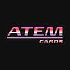 ATEM Membership Cards ATEM最初是为了将汽车文化融入身临其境的数字体验中_ ATEM 力求突破汽车文化的界限并在其基础上再接再厉。 ATEM 由一个相信数字时代的团队创立，即汽车文
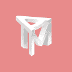 Atem NFT Passport Atem Network 正在构建一个去中心化的内容创建协议，我们旨在帮助创作者将他们的内容标记化并建立 web3 原生社区。目前，Atem 正在推出他们的新产品 AtemRe
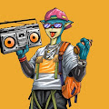 Aterium Univers Aterium Universe 1111 Genesis Collection 有五个基于漫画的角色。创世纪津贴包括未来收藏的免费薄荷糖和空投 ▶ 什么是 Aterium 宇宙创世纪？ Aterium Universe Genesis 是一个 NFT（不可替代令牌）集合。存储在
Atlantic Voyage Ape Club 每只猿都有自己独特的特征集，这些特征赋予持有者在 ASL 元界内外的特殊利益。Traits 不仅决定了稀有度，而且在应用于我们的 Metaverse 时还提供了额外的实用
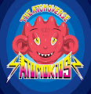 Atomo Kids PJB 由于质押，所有者总数并不是实际所有者数量的真实表示。 Atomo Kids，由 Pedro J Baez 从 MultiVerse 各处手绘的 155 幅 Atomo 组成的创世纪系列。Atomo 受到爱、积极和善良的
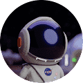 Atomverse Genesis atomverse 是 4,444 个可生成 nft 的集合，所有种类的原子都装饰有真实的元素属性、流行文化和街头服饰参考。 每件艺术品都是原创的，具有非常详细的背景和独特的特征。
Augminted Labs Scientists Augminted Labs Scientists 是在以太坊区块链上铸造的无上限供应 NFT 集合，从名称到特征都可以完全定制。 科学家在 Kaiju Kingz 生态系统的扩展中发挥了作用，他们能够窃取 $SCALE
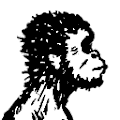 Australopithecus NFT 不可替代的南方古猿。它们是从手绘插图转换为数字插图的 2,000 件具有收藏价值的独特艺术品。 Lucy Holders 可以收到即将到来的 Skeleton Lucy 和 Homo NFT 南方古猿 NFT NFT - 常见问题 (FAQ) ▶
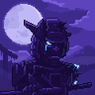 Automated Assassins 3333 创世纪刺客部署在区块链上 6 月 2 日 | P2E MMORPG。完成稀有物品的任务。升级你的刺客以增加赌注奖励。巡逻荒凉的拉诺星球，消灭你的目标并收集他
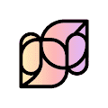 AvantGarde Genesis AvantGarde 是一个生成艺术项目，它通过深度学习算法和你的以太坊地址创建独特的艺术作品。为了评估抽象和 AI 生成的艺术品的价格，我们决定创建一个自动做市 (A
Avarik Saga Universe Avarik Saga 是 8,888 个生成 NFT 角色的骑士、弓箭手和巫师的旅程，这些角色源自 4 个冲突派系的 300 多个独特手绘特征。 在这些中世纪的土地上流传着一个传说，一位英雄将
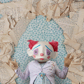 Average Creatures Average Creatures 是区块链上第一个全手工雕塑/摄影 NFT PFP 混合系列。 没错，每一件都是手工制作并单独拍摄的。受到 80 年代艺术、媒体和娱乐的所有实际效果荣耀的启发，
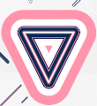 Avid Lines 该项目是关于 NFT 中可组合性的实验。这些碎片是在薄荷上生成的，使用来自 Autoglyphs 的指令和随机特征。选择 Autoglyphs 是因为它们是第一个也是最重要的生成艺术项目，完全
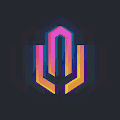 Awakened - MultiPass 变种首次出现是在 2037 年：更强；快点; 更聪明；更美丽。起初很微妙，所以没有人真正注意到，但随着时间的推移，分歧开始出现，那些不太幸运的人寻找平衡
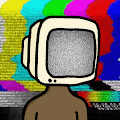 Awesome Apes NFT Official Awesome Apes 是由 JSTJR 手绘的随机生成的 NFT 集合。我们目前正在与经过验证的构建团队一起构建我们的 NFT 世界元界，提供第一个 P2E 现场音乐元界体验以及持有者独有的各种
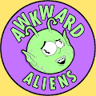 AwkwardAliens 银河系被一个邪恶的独裁者洗劫一空，他强迫每个人都服从并看起来都一样。AwkwardAliens 是银河系中最后 10,000 名 ERC-721 独特的外星人，他们蔑视他，
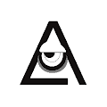 Aworld Aworld 是以太坊上第一个生成的手绘 NFT 集合。包含 1,000 个动物物种的特征随机生成到一个“蛋”中。每周都会随机选择鸡蛋，然后由杰出的艺术家设计和手绘。每个 NFT
Axion Collider 有机会将您的 Axion Particles NFT 转换为 Axion Particle Collider 上的实际 AXN 代币！每个 NFT 都包含一定数量的粒子，当参与 Collider 时，这些粒子可以在您设置的持续时间内变成质押的 AXN。他们
Axion NFT Ecosystem Axion NFT 生态系统就在这里。现在，世界上最好的质押代币带来了一套全新的实用、视觉和社区 NFT，旨在增强您的质押体验。Axion 的生态系统具有 8% 的固
Axolittles Axolittles 是 10,000 件由算法生成的艺术品的集合，由 160 多个特征组合而成。他们的灵感来自世界上最可爱的两栖动物蝾螈。每个 Axolittle 都是动画的，并带有一个 48 帧的 GIF，
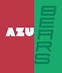 AzuBears 5,555个[AzuBears]从 100 多个干净和独特的特征中生成。生活在以太坊区块链上。受两个最伟大的项目 Azuki 和 Okay Bears 的启发。 ▶ 什么是 AzuBea
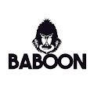 BaboonBet 获得在 Monkey Money 上运行的您自己的 NFT。 ▶ 什么是狒狒赌？ BaboonBet 是一个 NFT（非同质代币）集合。存储在区块链上的数字艺术品集合。 ▶ 有多少 BaboonBet 代币？ 总共有 10,000
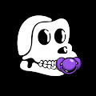 Baby Ape Club Official Baby Ape Club 官方 NFT - 常见问题（FAQ） ▶ 什么是猿猴俱乐部官方？ Baby Ape Club Official 是一个 NFT（非同质代币）集合。存储在区块链上的数字艺术品集合。 ▶ Baby Ape Club 官方
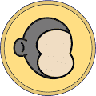 Baby Ape Doodles Baby Ape Doodles 统计数据 创建于 4 个月前 100 代币供应 5% 费用 过去 7 天没有售出婴儿猿涂鸦。 2000 幅小猿猴涂鸦。 Baby Ape Doodles NFT - 常见问题（FAQ） ▶ 什么是猿宝宝涂鸦？ Baby Ape
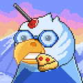 Baby Birdez Gang Baby Birdez Gang 是由 Genesis Birdez Holders 培育的 5000 只 Baby Birdez 的集合。每个 Baby 都是 The Nest Egg DAO 的成员。让您可以在 Metaverse 的猎人游戏中访问未来的 Birdez 3D NFT 免费薄荷糖。 能够每天赚取 10 美元的种子